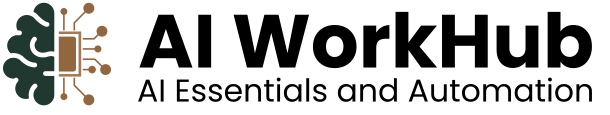

01
Understand AI
Make sense of artificial intelligence, its everyday uses, and where human judgement still matters.
THE FOUNDATIONS
Big ideas start with the right skills. Discover a practical, one-week learning experience built for Kenya’s next generation of thinkers, creators and doers.
Learn with purpose. Build with confidence.
AI is changing how we study, work and create. You don’t need to be a programmer to be part of that change. You just need somewhere to begin.
AI WorkHub is a Kenyan learning initiative focused on AI essentials and automation. We make room for curiosity, bringing complex ideas down to earth with practical exercises that connect what you learn to what you want to do.
Less jargon. More doing. ↗One week to move from “what is AI?”
to “look what I can do with it.”
Get comfortable with the tools. Understand the possibilities. Start turning everyday challenges into smarter ways of working.
Students, creatives, professionals
and ambitious beginners.
A practical introduction, one building block at a time.
Make sense of artificial intelligence, its everyday uses, and where human judgement still matters.
THE FOUNDATIONSAsk better questions. Give clearer instructions. Get more useful results from generative AI tools.
THE CONVERSATIONExplore AI-assisted writing, idea generation and content creation without losing your own voice.
THE CREATIVE PROCESSDiscover simple automation concepts and sketch a workflow that helps with a repetitive task.
THE PRACTICAL APPLICATIONOur goal is simple: help you feel more capable in a world shaped by AI.
Invest in your curiosity. Give your ambition a new set of tools.
Your next chapter starts with being informed.
No. The foundation programme is designed for beginners. Curiosity and a willingness to practise are the best starting points.
The programme runs for one week and costs KSh 10,000. The detailed timetable and payment instructions will be provided when enrolment opens.
The delivery format, venue and next cohort dates have not yet been announced. These details will be published here before applications open.
A laptop and reliable internet are recommended for hands-on practice. Any required accounts, software or additional tool costs will be confirmed with the final programme details.
Select “Join now” and continue with Google to access your student portal. Complete your application and choose full payment or two instalments: KSh 5,000 on enrolment and KSh 5,000 to receive your certificate. Course access opens after your enrolment is approved.
AI WorkHub makes AI essentials and automation approachable for students, creatives and professionals in Kenya.
We believe useful skills start with understanding, not jargon. Our focus is practical learning: exploring the tools, asking better questions and finding thoughtful ways to use AI in everyday work and study.
Whether you’re starting from scratch or looking for a new direction, bring your curiosity. We’ll help you take the next step.